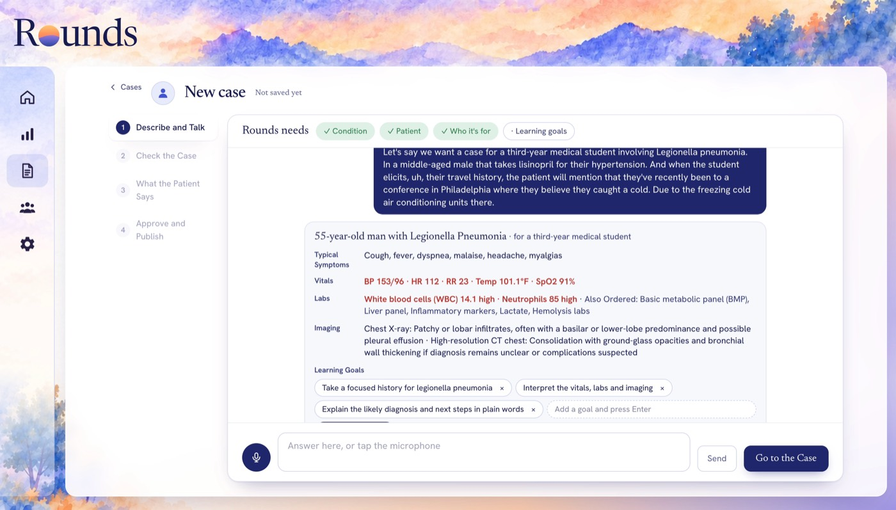
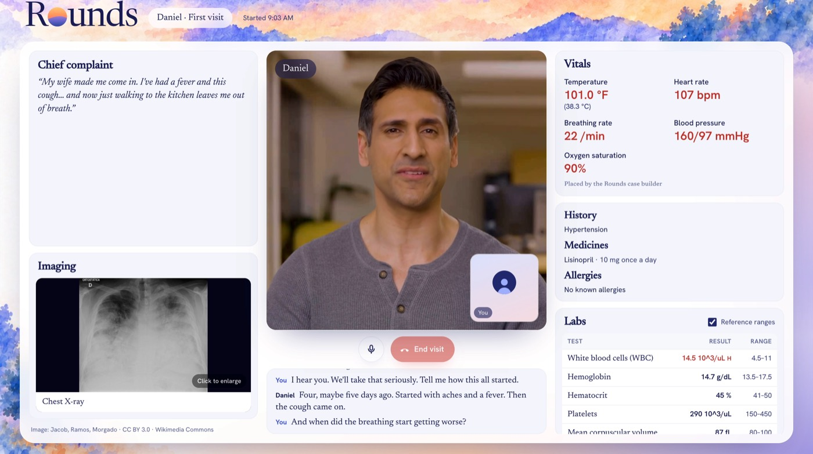

How it works
-
1
Faculty describe a patient
Say who the patient is and what students should practice, by voice or by typing. Rounds drafts the case, you approve the facts the patient can share, then assign it to a class.
-
2
Students talk with the patient
Out loud and hands-free, the way they would in a clinic room.
-
3
The debrief quotes the student
Seven communication scores, each shown with the line from the transcript it’s based on. Faculty read it first, change any score they disagree with, then release it.


Why schools choose Rounds
- No invented findings
- Every reply is checked against the facts faculty approved. Anything else is blocked before the student hears it.
- Scores tied to what was said
- Seven standard communication domains, each score backed by a line from the student’s own transcript.
- Faculty have the last word
- Faculty read the feedback first and can change any score before the student sees it.
- A case in minutes
- Describe the patient in a conversation. No curriculum to upload first, though you can attach your own files.
- Second visits follow on
- A follow-up visit changes based on what the student did in the first one.
- Practice before SP sessions
- More practice taking histories and explaining plans in the weeks before standardized-patient sessions, which stay as they are.